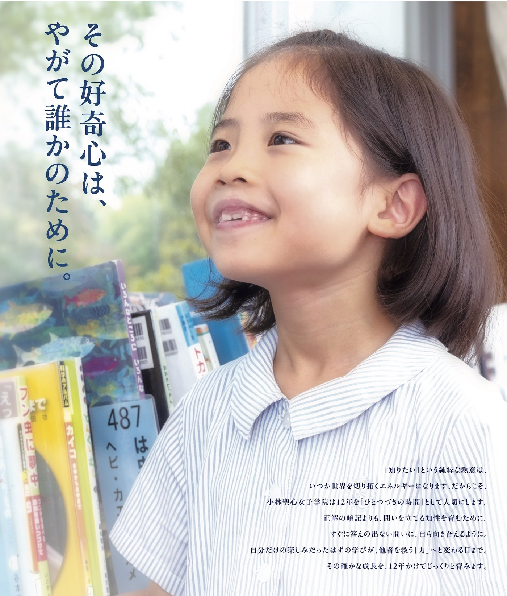
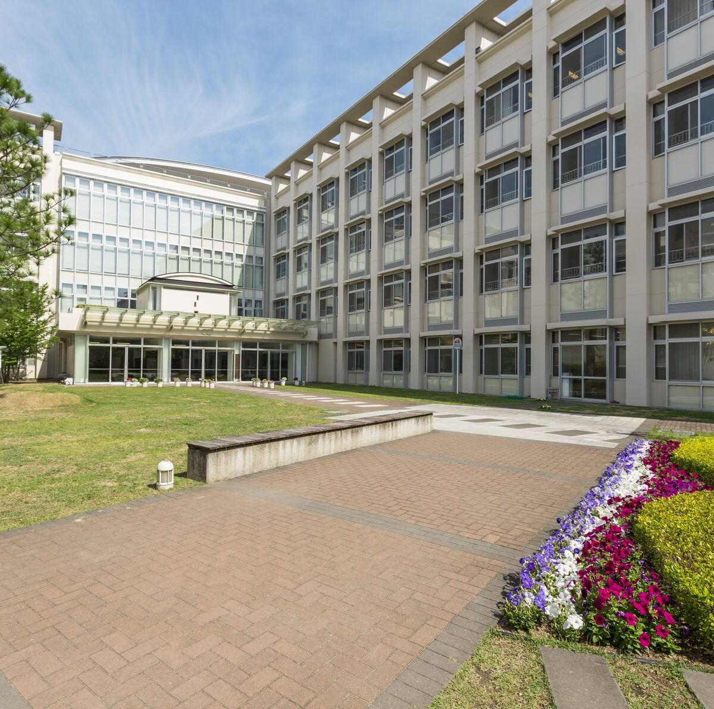
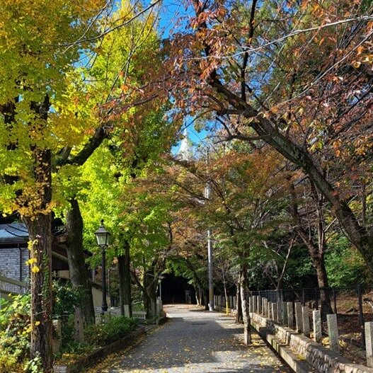
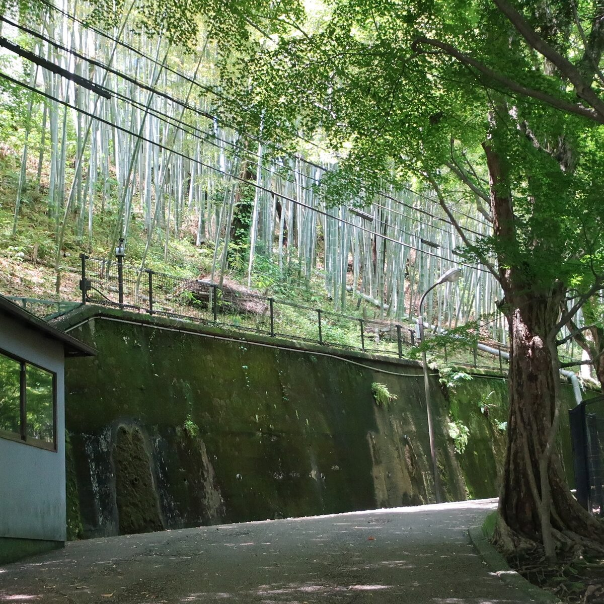
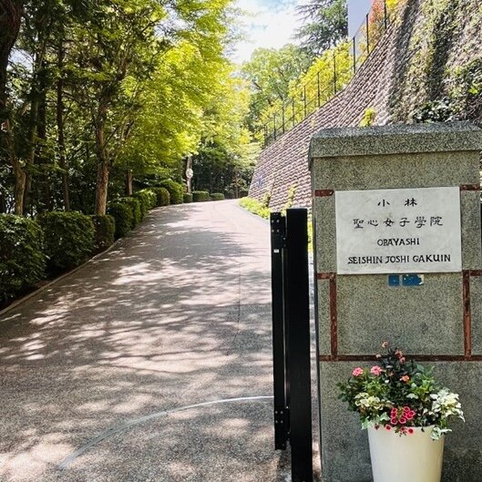

小林聖心女子学院小学校
学校説明会
日時
4月29日（水・祝）
10:00〜11:00
会場
小林聖心女子学院
小学校
対象
小学校入学を
ご検討の方
転入学・帰国生入学を
ご希望の方も
申込締切
4月28日（火）
23:59まで
イベントコンテンツ
入学後ちょっと先が分かる
児童・生徒による
ウェルカム英語スピーチ
12年後の未来が分かる
卒業生座談会
不安が安心に変わる
在校生保護者の
お話
A Mother's Quiet Struggle
こんな夜を、
過ごしてきませんでしたか。
寝かしつけを終えた、22時過ぎのリビング。
気がつけば、検索窓に同じ学校名を入れている。
公立って、実際どうなんだろう
この子の性格に、本当に合う学校はどこだろう
ここまで来て、"普通に"進んでいいのかな
資料を読むほどに、わからなくなる。
子どもは、気づかないうちに大きくなっていく。
答えが出ないのは、いい加減だからではありません。
お子さまの12年を、本気で選ぼうとされているからです。
What You Actually Want to See
本当に見たかったのは、
"12年後の娘の姿"だったはずです。
偏差値。進学実績。合格者数。
でも、あなたが本当に知りたかったのは、そういう数字ではなかったはずです。
12年後、お子さまはどんな表情をしているか
18歳で、自分の意見をどう語る人になっているか
20歳で、何を"心の支え"として生きているか
数字の先にある、お子さまの"人としての姿"。
「この学校だ」と腹落ちして、ご夫婦でひとつの方向を向いていたい。
たぶん、そういうことだったのだと思います。
It's Natural to Hesitate
迷って、当然だと思います。
はじめての学校選び、しかも12年という長い時間の入口。
迷いがあるのは、当然のことです。
「私立って、うちには分不相応かも」
「ミッションスクールって、信者でないと気後れしそう」
「年長のいま動き始めて、もう間に合わないのでは」
「夫は"公立でいいじゃない"と言っている」
「下の子がまだ小さいし、説明会に出るのも一苦労」
どれも、本気で考えてこられたからこそ浮かぶ"ためらい"です。
まずは一度、"問える場所"にいらしてみませんか。
パンフレットでは伝わらないこと、ネットには載っていないこと——
あなたの"ためらい"への率直なお答えを、60分でお伝えします。
A Quiet Fear
答えを、先送りし続けること。
お子さまは、今も、きょうも、
親が迷っているかどうかに関係なく、すくすく育っていきます。
本当に怖いのは、「誤った選択をすること」ではないのかもしれません。
10年後のある日。思春期の娘が静かに揺れていて、それを見守りながら、
「あの時、あの学校も、見に行くだけでも行っておけばよかったな」
と、あなたの心に小さな問いが残ること。
もちろん仮定の話です。どの道を歩んでも、娘さんは幸せに育つかもしれません。
ただ、迷いを抱えたまま進むよりも、
一度、扉の中を見てから決めるほうが、
ご自身の納得は、きっと深くなります。
Where 12 Years Begins
小林聖心は、12年を
「ひとつづきの時間」として
大切にしています。

「知りたい」という純粋な熱意は、
いつか世界を切り拓くエネルギーになります。
だからこそ、小林聖心女子学院は12年を
「ひとつづきの時間」として大切にします。
正解の暗記よりも、問いを立てる知性を育むために。
すぐに答えの出ない問いに、自ら向き合えるように。
自分だけの楽しみだったはずの学びが、
他者を救う「力」へと変わる日まで。
その確かな成長を、12年かけてじっくりと育みます。
1923年、本校創立。
2023年、100周年を迎えました。
変わらず受け継いできたものが、3つあります。
01
魂を育てる
1日に2回、教室で静かに祈る時間があります。
合唱の響きの中、ふりかえりの時間の中で、お子さまは「自分と向き合うこと」を、生活の一部にしていきます。
年に4回、聖堂に集まってミサをささげる日もあります。
02
知性を磨く
正解を暗記する学びではなく、問いを立てる知性を育みます。
すぐに答えの出ない問いにも、逃げずに向き合う。
12万冊の蔵書がある図書館は、その探究を静かに支えます。
03
実行力を養う
児童会・委員会・クラブ活動を通じて、責任を引き受け、行動する経験を重ねます。
「自分のために学んだことを、誰かのために使ってみる」。
——好奇心が、他者のための力に変わっていく瞬間です。
Beyond the 12 Years
12年の、その先へ。
一学年、60名〜100名ほどの小さな学校です。
ひとりひとりを見守れる規模のまま、12年を歩みます。
ほぼ100％の卒業生が、4年制大学へ進学します。
そのうち6〜7割が、推薦制度で進学しています。
進学先は、文系だけでなく、
自然科学系・医歯薬系・芸術系まで、静かに広がっていきます。
生徒は、単に学力や偏差値だけで大学を選ぶのではなく、
生き方としての進路を選んでいきます。
——これが、12年一貫という"ひとつづきの時間"の、
もうひとつの恩恵です。
Come As You Are
よくいただく、ご不安へのお答え。
気になる見出しをタップすると、お答えが開きます。
Q. キリスト教の信者でないのですが、大丈夫でしょうか？ expand_more
本校の宗教教育は、人間の土台としての宗教教育です。
お祈りや神様のことを勉強しますが、学問的なことよりも「自分は愛されている」という自尊心を育てたり、自然を愛することを実感したりすることを大切にしています。
キリスト教信者にならなければならない、ということもありません。信者でないご家庭の方が、ほとんどです。
Q. 年長の今から動き始めて、間に合いますか？ expand_more
小1入試は、A日程（9月）・B日程（10月）・C日程（11月）の3回実施されます。年長の春に動き出される方は、多くいらっしゃいます。
まずは学校の空気に触れてみてください。6月20日（土）には入試説明会・入試体験・願書記入があり、昨年度の実際の問題を見ながら本校教員が口頭で出題する時間をご用意しています。
Q. 夫婦でうかがえるでしょうか？ expand_more
ぜひ、ご夫婦でお越しください。本校では、親子面接もご両親でのご参加をお願いしています。
説明会も、ご夫婦で景色を共有していただく60分にしています。
Q. 下の子がまだ小さくて…… expand_more
同伴していただけます。お気兼ねなく、ご家族でいらしてください。
Q. 通学は大丈夫でしょうか？ expand_more
本校は阪急今津線「小林（おばやし）駅」から徒歩7分です。
- ◆大阪梅田駅から小林駅まで 26分
- ◆神戸三宮駅から 25分（乗り換え含む）
- ◆宝塚駅から 6分
通学の所要時間は1時間30分までとさせていただいています。1年生入学直後は送迎から始まり、やがて地区ごとの集団下校へと、子どもたちは自然に自立していきます。
下校時は半年間、教員が小林駅まで送り届けます。通学路や電車では、併設の中高生も見守ってくれます。
Q. 共働きなのですが、放課後は？ expand_more
放課後児童クラブ「マイヤークラブ」があります。
自然豊かな学院敷地内の「ロザリオヒル教育施設」で、宿題・おやつの後、異学年の友達と19時まで過ごせます。
Q. どんな雰囲気の説明会ですか？ expand_more
この説明会は、"問える場"です。
60分の中心は、卒業生・在校生保護者・高校生が語る時間。学校が一方的に話すのではなく、12年を経験された方の言葉から、ご自身で受け取っていただく場です。
Your 60 Minutes
当日の流れ
受付開始（学院紹介映像上映）
ウェルカム英語スピーチ
校長挨拶
卒業生座談会（20分）
在校生保護者のお話（15分）
入試広報委員長より（今後の行事案内）
全体会終了
After the Session
全体会後、自由参加プログラム
11:00以降は、ご自由にお楽しみください。
ミッションツアー
謎解きスタンプラリー
フォトスポット
記念撮影
コンシェルジュさんを探せ
シールがもらえるよ
マイヤークラブ見学
放課後児童クラブ
パン販売
個別相談会
転入試説明会（小学生対象）
※転入をお考えの方はご参加ください
Voices — 12 Years Later
12年を終えた、ご家庭から。
※ 12年生（高校3年生）の保護者の方々に、振り返りを寄せていただいた手記より。
娘が何度も伝えてくれました。
「自分の学校は、小林聖心以外に考えられない」と。
小学校受験の時、娘はあまりにも幼く無邪気で、受験させること自体に不安と葛藤がありました。
娘にとって本当に良かったのかと、不安がよぎることもありました。けれど、いざ入学すると、先生方のきめ細やかなお心遣い、お優しい対応に、日に日に不安がなくなり、本当にお世話になることができてよかったという気持ちが強くなりました。
それは、小中高と学年が上がっていくごとに強い確信となり、娘も「自分の学校は小林聖心以外に考えられない」と、私たちの選択に感謝を伝えてくれる機会が何度もありました。
娘に、その12年間に小林聖心の学校生活をプレゼントできたことを、
親として、大変うれしく思っております。
みこころ坂で見つけた落ち葉を、
「ママにお土産だよ」と、ポケットから。
阪急小林駅の改札を出て、石畳の小道を進み、みこころ坂を登っていくと、歴史の重みを感じる校舎と、その手前にずっと続く美しい青々とした竹林が私達を迎えてくれました。
正直、まだ幼い娘に重たいランドセルを背負わせ、電車登校させることには心労も伴いました。
けれど、毎日笑顔いっぱいで「楽しかったよ」と帰ってきてくれて、
時にはみこころ坂で見つけた美しい色の落ち葉を制服のポケットに詰めて、「ママにお土産だよ」と持って帰ってきてくれたこともありました。12年間で娘たちは、皆姉妹のように何でも話せ、助け合いながら絆を深めてこられたのだと思います。
小林聖心が大切にしている "Big You, small i" は、私も大好きな言葉です。
親子共に、多くの学びのある実り多い12年間でした。


4月29日には、こうして12年を歩まれたご家庭の「いまの声」を、
在校生保護者・卒業生のかたちで、直接お届けします。
Before You Come
この60分が、向かないかもしれない方へ。
率直に申し上げますと、この説明会は、こんな方にはお時間の無駄になるかもしれません。
- ◇偏差値・合格実績の数字だけで、学校を比較したい方
- ◇「祈りの時間」のような、静かな時間に価値を感じられない方
- ◇できるだけ早く、どこかの合格を確定させたい方
本校の60分は、数字ではなく、12年という"ひとつづきの時間"の手触りをお伝えする場です。
もし、上のどれか一つでも「むしろ、そこを見に行きたい」と感じてくださるなら——
この先の"お申込"を、どうぞ。

See You on April 29
4月29日、お待ちしています。
長く、迷ってこられたのだと思います。
その迷いを、否定する気はありません。
むしろ、ここまで本気で考えてこられたことを、静かに尊敬しています。
だからこそ、4月29日の60分を、
あなたの"次の一歩"のために、使ってください。
- ◆決断する必要はありません
- ◆質問しなくても構いません
- ◆ご夫婦でも、お子さまご同伴でも構いません
ただ、扉の中を、見にきてください。
選ぶのは、あなたです。
——一歩踏み出される方から、静かに席が埋まっていきます。
2026年4月29日（水・祝）10:00〜11:00
申込締切：4月28日（火）23:59
お申込は外部の申込システム（ミライコンパス）に移動します
Still Thinking?
まだ迷っている方へ。
申し込む前に、まずは学校の日常を
のぞいてみてください。
子どもたちの声、季節の風景、祈りの時間——
Instagramで、静かにお届けしています。
@obayashiseishin_primaryschool
A Quiet Message from Our Teachers
正直に、申し上げます。
この学校は、派手な学校ではありません。
テレビに出る有名人を出してきた学校でもありません。
ただ、100年前からここにある場所で、今日もお子さまたちと、祈り、学び、歌い、ふりかえっています。
卒業生の多くは、
「あの学校でよかった」と、何十年もたってから、
静かに言ってくれます。
派手な言葉で売り込むことは、できません。
けれど、この12年の中で起きていることは、本物だという
静かな自信だけは、持っています。
4月29日、
その空気の一端を、お伝えできればと思っています。
—— 小林聖心女子学院 教員一同
——もし、ここまで読んでくださったなら。
その扉の中を、4月29日にご覧ください。
2026年4月29日（水・祝）10:00〜11:00
申込締切：4月28日（火）23:59
Access
アクセス・ご来校にあたって
小林聖心女子学院小学校
location_on 〒665-0073 兵庫県宝塚市塔の町3-113
train
阪急今津線「小林（おばやし）」駅下車 徒歩7分
大阪梅田駅から26分／神戸三宮駅から25分／宝塚駅から6分
宝塚・西宮・伊丹・芦屋・大阪北摂から、阪急今津線で通われています。
call TEL: 0797-71-7321
info ご来校にあたって
- 駐車場はございません。公共交通機関でお越しください。
- 学院内の撮影はご遠慮ください。
- 下のお子さまの同伴は可能です。
- ご夫婦でのご参加を歓迎します。